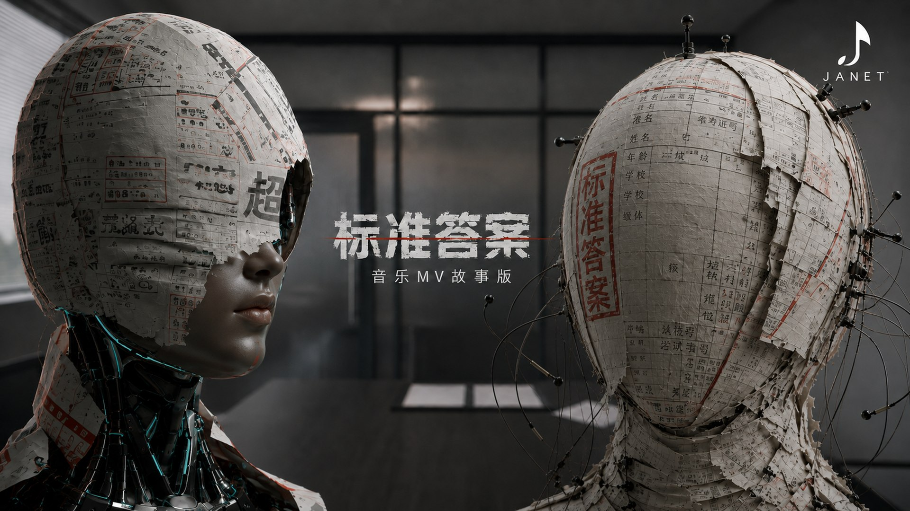

影像有不同的形状。
四个项目，从角色与场景，走到成片与制作档案。

New / Story × Music
标准答案
LA RESPUESTA。一场 AI 影像创意终面，让林澄从寻找正确答案，走向形成自己的判断。现实对白与音乐叙事交替推进。
观看成片与制作过程 ↗

Newest / Visual Dance MV
QUIET HEAT
一支由四个角色、八套场景、完整节奏时间线和声音拆分流程构成的视觉舞蹈 MV。公开页收录成片与全部制作图像档案。
进入完整档案 ↗

AI Historical Film
漫威十人
从马丁·古德曼到凯文·费奇，用一镜到底的历史穿越，重看漫威如何被十位关键人物接力改写。
进入专题 ↗

Worldbuilding Series
穿梭宇宙
围绕角色气质、标志性骑乘方式、异世界场景与第三人称追随镜头，建立可持续扩展的视觉爽感系统。
进入项目 ↗